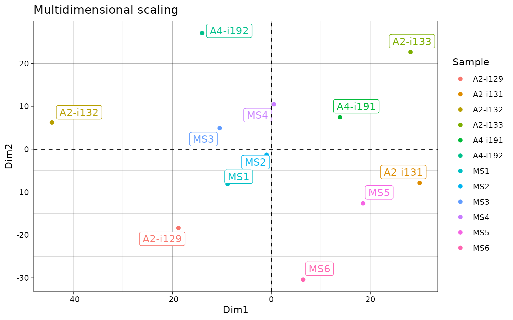

Repertoire overlap and public clonotypes
ImmunoMind
support@immunomind.io
Source:vignettes/web_only/v4_overlap.Rmd
v4_overlap.RmdRepertoire overlap
Repertoire overlap is the most common approach to measure repertoire similarity. It is achieved by computation of specific statistics on clonotypes shared between given repertoires, also called “public” clonotypes. immunarch provides several indices: - number of public clonotypes (.method = "public") - a classic measure of overlap similarity.
overlap coefficient (
.method = "overlap") - a normalised measure of overlap similarity. It is defined as the size of the intersection divided by the smaller of the size of the two sets.Jaccard index (
.method = "jaccard") - it measures similarity between finite sample sets, and is defined as the size of the intersection divided by the size of the union of the sample sets.Tversky index (
.method = "tversky") - an asymmetric similarity measure on sets that compares a variant to a prototype. If using default arguments, it’s similar to Dice’s coefficient.cosine similarity (
.method = "cosine") - a measure of similarity between two non-zero vectorsMorisita’s overlap index (
.method = "morisita") - a statistical measure of dispersion of individuals in a population. It is used to compare overlap among samples.incremental overlap - overlaps of the N most abundant clonotypes with incrementally growing N (
.method = "inc+METHOD", e.g.,"inc+public"or"inc+morisita").
The function that includes described methods is repOverlap. Again the output is easily visualised when passed to vis() function that does all the work:
imm_ov1 = repOverlap(immdata$data, .method = "public", .verbose = F)
imm_ov2 = repOverlap(immdata$data, .method = "morisita", .verbose = F)
grid.arrange(vis(imm_ov1), vis(imm_ov2, .text.size=2), ncol = 2)

You can easily change the number of significant digits:
grid.arrange(vis(imm_ov2, .text.size=2.5, .signif.digits=1), vis(imm_ov2, .text.size=2, .signif.digits=2), ncol = 2)
To analyse the computed overlap measures function apply repOverlapAnalysis.
# Apply different analysis algorithms to the matrix of public clonotypes:
# "mds" - Multi-dimensional Scaling
repOverlapAnalysis(imm_ov1, "mds")## Standard deviations (1, .., p=4):
## [1] 0 0 0 0
##
## Rotation (n x k) = (12 x 2):
## [,1] [,2]
## A2-i129 -20.2308709 -22.431389
## A2-i131 8.3055445 26.779321
## A2-i133 45.9341813 6.893304
## A2-i132 -55.0903957 18.572513
## A4-i191 23.7461189 1.118162
## A4-i192 -4.4041243 -38.028858
## MS1 -19.5494165 12.836320
## MS2 -1.9063188 6.075283
## MS3 -9.8321059 -11.217724
## MS4 0.9127103 -1.154627
## MS5 5.6552254 27.415676
## MS6 26.4594518 -26.857981## DimI DimII
## A2-i129 12.2697768 -72.98788
## A2-i131 -40.4181005 -349.95546
## A2-i133 15.9122415 175.00404
## A2-i132 6.2753698 156.02270
## A4-i191 18.6706749 161.66663
## A4-i192 5.6982493 -84.26917
## MS1 -0.5272897 -70.40293
## MS2 4.3843790 168.91833
## MS3 7.2157768 -75.25710
## MS4 9.6924766 166.22368
## MS5 -35.6424261 -347.90316
## MS6 -3.5311284 172.94031
## attr(,"class")
## [1] "matrix" "immunr_tsne"
# Apply different analysis algorithms to the matrix of public clonotypes:
# "mds" - Multi-dimensional Scaling
repOverlapAnalysis(imm_ov1, "mds")## Standard deviations (1, .., p=4):
## [1] 0 0 0 0
##
## Rotation (n x k) = (12 x 2):
## [,1] [,2]
## A2-i129 -20.2308709 -22.431389
## A2-i131 8.3055445 26.779321
## A2-i133 45.9341813 6.893304
## A2-i132 -55.0903957 18.572513
## A4-i191 23.7461189 1.118162
## A4-i192 -4.4041243 -38.028858
## MS1 -19.5494165 12.836320
## MS2 -1.9063188 6.075283
## MS3 -9.8321059 -11.217724
## MS4 0.9127103 -1.154627
## MS5 5.6552254 27.415676
## MS6 26.4594518 -26.857981## DimI DimII
## A2-i129 151.07971 6.4235410
## A2-i131 -212.85491 33.7630904
## A2-i133 -40.78513 -11.0785740
## A2-i132 -24.57136 -18.2749108
## A4-i191 -35.54737 -21.1417265
## A4-i192 160.23235 0.5933717
## MS1 148.48450 -4.1120462
## MS2 -30.14214 -8.9633306
## MS3 152.78470 2.1650050
## MS4 -32.14518 -13.4768715
## MS5 -209.39075 36.3082597
## MS6 -27.14442 -2.2058083
## attr(,"class")
## [1] "matrix" "immunr_tsne"
# Clusterise the MDS resulting components using K-means
vis(repOverlapAnalysis(imm_ov1, "mds+kmeans"))
Public repertoire
In order to build a massive table with all clonotypes from the list of repertoires use the pubRep function.
# Pass "nt" as the second parameter to build the public repertoire table using CDR3 nucleotide sequences
pr.nt = pubRep(immdata$data, "nt", .verbose = F)
pr.nt## CDR3.nt Samples A2-i129
## 1: TGCGCCAGCAGCTTGGAAGAGACCCAGTACTTC 8 2
## 2: TGTGCCAGCAGCTTCCAAGAGACCCAGTACTTC 7 NA
## 3: TGTGCCAGCAGTTACCAAGAGACCCAGTACTTC 7 1
## 4: TGCGCCAGCAGCTTCCAAGAGACCCAGTACTTC 6 2
## 5: TGTGCCAGCAGCCAAGAGACCCAGTACTTC 6 5
## ---
## 86979: TGTGCTTCACAACTCTTATTGGACGAGACCCAGTACTTC 1 NA
## 86980: TGTGCTTCACAAGCCCTACAGGGCACTTTCCATAATTCACCCCTCCACTTT 1 NA
## 86981: TGTGCTTCAGGGCGGGCCTACGAGCAGTACTTC 1 NA
## 86982: TGTGCTTCCGCCGGACCGGACCGGGAGACCCAGTACTTC 1 NA
## 86983: TGTGCTTGCGGGACAGATAACTATGGCTACACCTTC 1 NA
## A2-i131 A2-i133 A2-i132 A4-i191 A4-i192 MS1 MS2 MS3 MS4 MS5 MS6
## 1: NA 2 1 NA 1 NA NA 1 1 1 1
## 2: 1 1 2 1 NA 2 NA NA 2 NA 1
## 3: 1 1 NA 1 1 1 NA 2 NA NA NA
## 4: NA 1 1 NA NA NA 1 NA 1 NA 1
## 5: 3 NA 2 3 2 NA NA NA NA 5 NA
## ---
## 86979: 1 NA NA NA NA NA NA NA NA NA NA
## 86980: NA NA NA NA NA NA NA NA NA 1 NA
## 86981: NA NA NA NA NA 1 NA NA NA NA NA
## 86982: NA 1 NA NA NA NA NA NA NA NA NA
## 86983: NA NA NA NA 1 NA NA NA NA NA NA# Pass "aa+v" as the second parameter to build the public repertoire table using CDR3 aminoacid sequences and V alleles
# In order to use only CDR3 aminoacid sequences, just pass "aa"
pr.aav = pubRep(immdata$data, "aa+v", .verbose = F)
pr.aav## CDR3.aa V.name Samples A2-i129 A2-i131 A2-i133
## 1: CASSLEETQYF TRBV5-1 8 2 NA 3
## 2: CASSDSSGGANEQFF TRBV6-4 6 1 1 2
## 3: CASSDSSGSTDTQYF TRBV6-4 6 NA NA NA
## 4: CASSFQETQYF TRBV5-1 6 3 NA 1
## 5: CASSLGETQYF TRBV12-4 6 2 NA NA
## ---
## 86181: CTSSRPTQGAYEQYF TRBV7-2 1 NA NA NA
## 86182: CTSSSRAGAGTDTQYF TRBV7-2 1 NA NA NA
## 86183: CTSSYPGLAGLKRKETQYF TRBV7-2 1 NA NA NA
## 86184: CTSSYRQRPYQETQYF TRBV7-2 1 NA NA NA
## 86185: CTSSYSTSGVGQFF TRBV7-2 1 NA NA NA
## A2-i132 A4-i191 A4-i192 MS1 MS2 MS3 MS4 MS5 MS6
## 1: 1 NA 2 NA NA 1 1 1 1
## 2: NA 5 NA NA NA 2 NA NA 15
## 3: 4 1 1 NA NA 1 1 NA 2
## 4: 1 NA NA NA 1 NA 1 NA 1
## 5: 4 3 NA 1 NA NA NA 2 3
## ---
## 86181: NA NA NA NA NA NA NA NA 1
## 86182: NA NA NA NA NA 1 NA NA NA
## 86183: 1 NA NA NA NA NA NA NA NA
## 86184: NA NA NA NA NA 1 NA NA NA
## 86185: NA NA NA NA NA NA 1 NA NA# You can also pass the ".coding" parameter to filter out all noncoding sequences first:
pr.aav.cod = pubRep(immdata$data, "aa+v", .coding=T)# Create a public repertoire with coding-only sequences using both CDR3 amino acid sequences and V genes
pr = pubRep(immdata$data, "aa+v", .coding = T, .verbose = F)
# Apply the filter subroutine to leave clonotypes presented only in healthy individuals
pr1 = pubRepFilter(pr, immdata$meta, c(Status = "C"))
# Apply the filter subroutine to leave clonotypes presented only in diseased individuals
pr2 = pubRepFilter(pr, immdata$meta, c(Status = "MS"))
# Divide one by another
pr3 = pubRepApply(pr1, pr2)
# Plot it
p = ggplot() + geom_jitter(aes(x = "Treatment", y = Result), data=pr3)
p